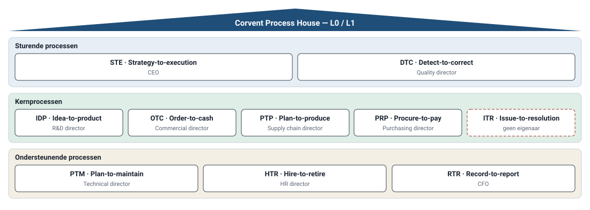
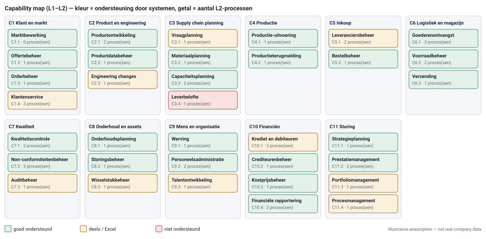
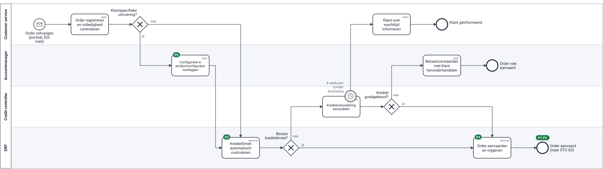
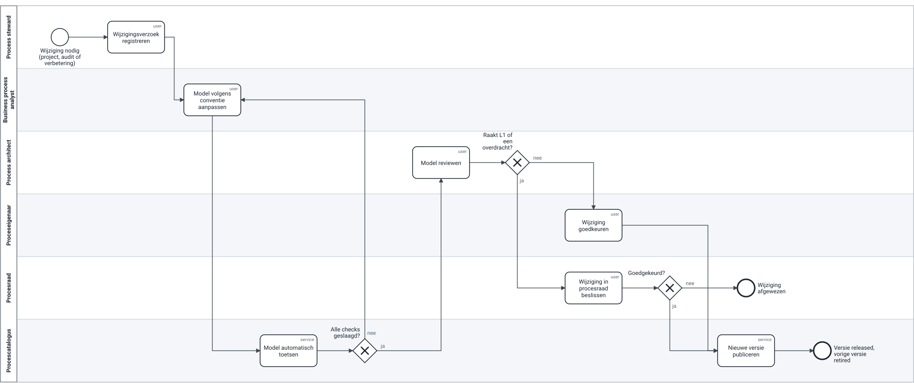

1 · Het probleem
Een procesboom, geen proceshuis
- Procesarchitectuur getekend op capabilities en end-to-end processen — en niet gebruikt
- 8 van 41 processen zonder eigenaar · 8 vrijgegeven modellen · vier modelleerstijlen
- Over zes weken vraagt het ERP-project welke versie de juiste is
2 · Mijn aanpak
Niet hertekenen, laten leven
- Frame → Structure → Standardise → Model → Review → Govern → Improve
- Eerst gesprekken, tien modellen lezen, meelopen
- Het ERP-project is de eerste klant: daar ga ik diep

3 · Structuur
Capabilities naast de procesboom
- Wat vs hoe: capabilities zijn naamwoorden, processen object + werkwoord
- Leverbelofte staat rood: geen systeem ondersteunt ze
- Catalogus uit één bron: eigenaar, status, capability, systemen, reviewdatum

4 · Standaard
Drie pagina's, 18 regels, 13 automatisch
- Palet van ±15 BPMN-elementen; geen inclusive gateway
- Naamregel: object + werkwoord, zoals in de catalogus
- check_models.py + 17 tests in CI; werkversies mogen nog falen
5 · Referentiemodel
Order-to-cash: van pijnpunt naar oplossing
- As-is: vijf genummerde pijnpunten
- To-be: configurator, automatische kredietcheck, uitzonderingen, timer van 4 werkuren
- De leverdatum krijgt een eigen proces met één eigenaar

6 · Coachen
Van 9 bevindingen naar 0
- Het script vindt de vorm; de analist lost die zelf op
- Mijn feedback: vijf vragen over betekenis
- Wat geen model oplost, gaat naar de procesraad

7 · Governance
Wie beslist
- Eigenaar beslist, steward houdt bij, architect bewaakt de vorm
- Procesraad: elke keer minstens één beslissing (D-03: eigenaar leverdatum)
- Wijzigingsflow is zelf een proces dat zijn eigen checks haalt

8 · Waarde en rol
Wat het oplevert, wat het toont
- Doel 12 maanden: 41/41 met eigenaar, 30/41 vrijgegeven (illustratief)
- Verbeteringen gekoppeld aan proces-ID en KPI; Lean verbetert, BPM legt vast
- Ik breng structuur, maak standaarden toetsbaar, modelleer zelf en leg conflicten bij wie beslist